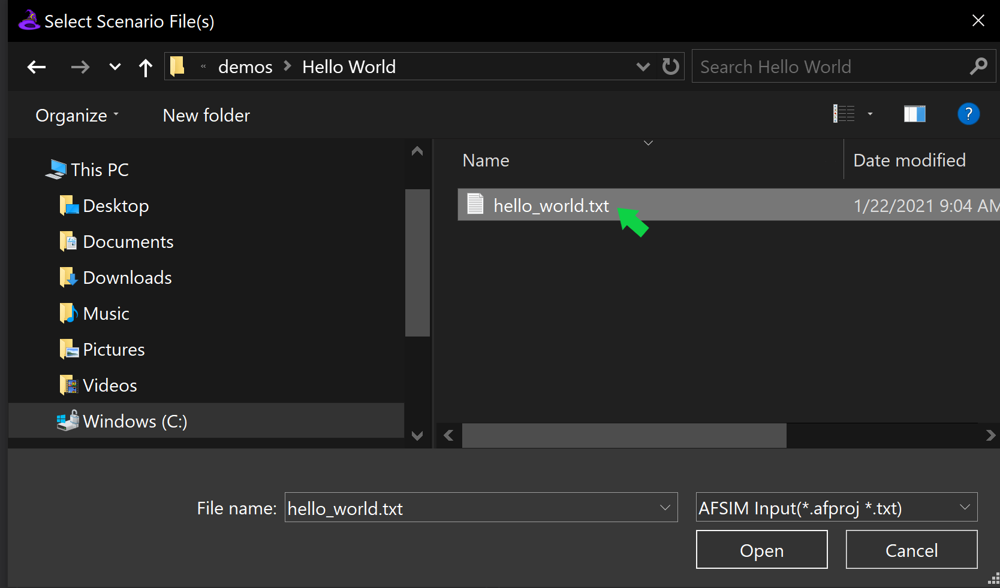
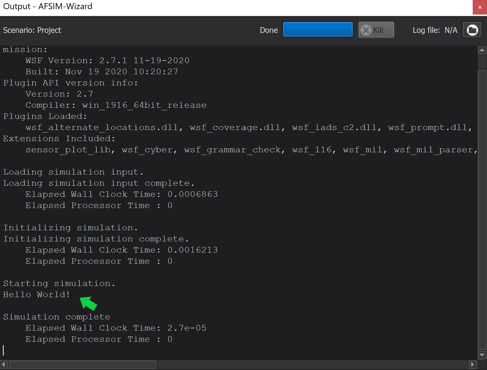

Mission¶
Mission is AFSIM’s baseline executable. Through Mission, the user may access the World Simulation Framework (WSF). The executable (mission.exe) interprets text based simulation input files (scenarios) to generate a simulation and optionally produces output in a variety of formats.
Mission is directly accessible from the command line and may also be selected as the target executable through Wizard’s Sim Execution Preferences. When executed from the command line, options are available which define Mission’s runtime behavior. The user may also define runtime behavior directly within a scenario.
Quick Start¶
Before running Mission, the user will need a scenario. A scenario may be chosen from the AFSIM demos provided with the installation, or the user can create a scenario as follows:
In the working directory, create a file called hello_world.txt, edit the file and add the following lines, then save the file:
# Hello World Scenario
execute at_time 0.1 sec absolute
writeln("Hello World!");
end_execute
The Hello World scenario will be created in the working directory.
Launch Mission From Command Line¶
When running Mission from the command line, include a specific project file (such as hello_world.txt) as a command line option.
Note
If Mission does not launch as expected, ensure that the AFSIM installation path is set in the system environment variables. The Mission executable (mission.exe) is located in the ‘/bin’ directory of the AFSIM release file structure.
The Mission command line syntax is provided below:
>> mission.exe <file_name.txt>
Complete the following steps to launch Mission and run the Hello World scenario from the command line:
Navigate to the working directory containing the hello_world.txt scenario file.
Launch Mission with the hello_world scenario as an argument.
Example:
>> mission.exe hello_world.txt
Mission will execute the scenario and, in this case, print all output directly to the command line.
Tip
This is a simplistic view of launching Mission from the command line. There are additional command line options and scenario scripting commands to control simulation frame time execution and output format. More information on Mission’s command line options and outputs can be found in the AFSIM documentation suite.
Launch Mission From Wizard¶
Complete the steps below to run the hello_world scenario in Mission from Wizard:
Launch Wizard and open the hello_world scenario file from the File Menu.
Tip
Additional details on launching Wizard and opening scenarios are discussed in Wizard.
Ensure that Mission is displayed to the left of the Run Button in Wizard’s Sim Execution Toolbar.
{kind=link}
{kind=link}
Note
If “Mission” is not displayed next to the Run Button, click the displayed name to open Wizard’s Sim Execution preferences and select Mission from the list. Then click “OK”.
{kind=link}
Click the Run Button and observe the console view within the Output Widget.
Note
If the Output Widget is not visible. It can be shown by clicking “View” in the Menu Bar, and checking the “Output” option.
Output¶
By default, Mission will print metadata to the Wizard Output view, including version information, plugins, extensions, and basic runtime statistics.
For this example the message “Hello World!” is printed, between “Starting simulation.” and “Simulation complete”.
{kind=link}
Summary¶
Mission is the WSF baseline simulation application that reads text files generating a simulation and produces output in a variety of formats.